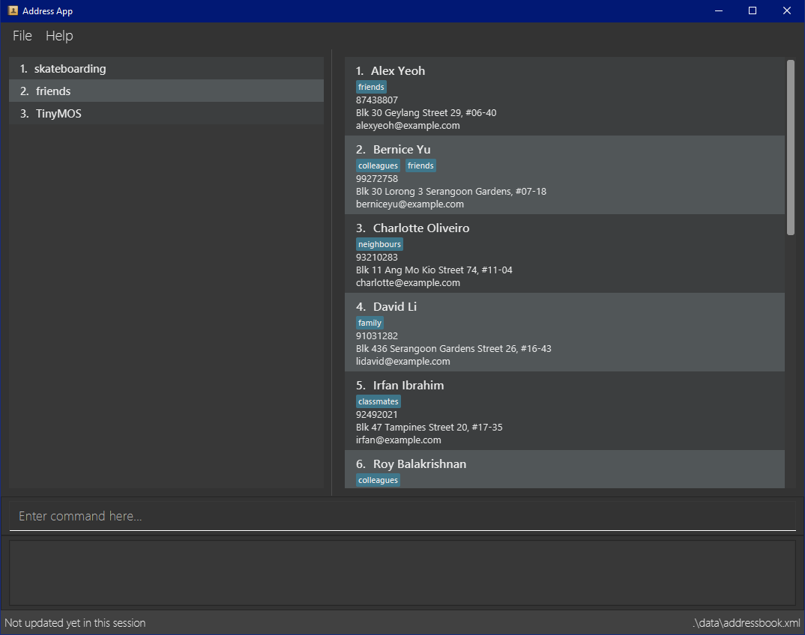

By: Team CS2103-AY1819S1-W17-3 Since: Aug 2018 Licence: MIT
- 1. Introduction
- 2. Quick Start
- 3. Features
- 3.1. Viewing help :
help - 3.2. Adding a new task:
add - 3.3. Editing a task :
changeto - 3.4. Deleting a task:
delete/del - 3.5. Managing the module list: modules
- 3.6. Find a task:
find / findwhere - 3.7. Sort the list:
sort - 3.8. Selecting a task :
select - 3.9. Going back to the parent task :
back / b - 3.10. Listing all tasks :
list - 3.11. Marking the selected task as done:
markdone / md - 3.12. Import Persons :
import - 3.13. Export Persons :
export - 3.14. Autocomplete
- 3.15. Saving the data
- 3.16. Encrypting data files
[coming in v2.0]
- 3.1. Viewing help :
- 4. FAQ
- 5. Command Summary
1. Introduction
Flashbook is for those who prefer to use a desktop app to manage their to-do for university. Flashbook is designed for those who prefer to work with a Command Line Interface (CLI) while still having the benefits of a Graphical User Interface (GUI). Users who can type fast can navigate and use the to-do list faster than traditional GUI apps. Makes your hand itchy and want to try out? Go to Section 2, “Quick Start” to get started!
2. Quick Start
-
Ensure you have Java version
9or later installed in your Computer. -
Download the latest
flashbook.jarhere. -
Copy the file to the folder you want to use as the home folder for your Flash Book.
-
Double-click the file to start the app. The GUI should appear in a few seconds.
 -
Type the command in the command box and press Enter to execute it.
e.g. typinghelpand pressing Enter will open the help window. -
Some example commands you can try:
-
list: Display all existing tasks on the display. -
addn this add high Problem_5.12 with deadline on 100918: the most difficult one: adds a task namedProblem_5.12to the FlashBook and set the deadline of the task to due on10/08/18. -
delete3: deletes the 3rd contact shown in the current list -
exit: exits the app
-
-
Refer to Section 3, “Features” for details of each command.
3. Features
Command Format
-
Words in square brackets are the parameters to be supplied by the user e.g. in
changeto [tag] with [TaskParameters],TaskParametersandtagare parameters which can be used aschangeto urgent with deadline on 110918. -
Words in square brackets are optional. e.g.
changeto [tag] with [TaskParameters]can be used aschangeto with deadline on 110918orchangeto urgent
3.1. Viewing help : help
Format: help
3.2. Adding a new task: add
Add a new task named [Task Name] with parameters described in [Task Parameters] to the module [Module Name].
Format: in [Module Name] add [Tag] [Task Name] with [Task Parameters]:[Description]
| If Module Name is “this” or “&”, the new task will be added as a subtask of the selected task |
-
urgent / u
-
high / h
-
normal / n (default)
-
low / l
-
done / d (this task will not show up in the find command unless specified)
-
Deadline:
deadline on DDMMYY, or the shorthanddlDDMMYY -
Location:
@[Location Name]
Examples:
-
in ST2131 add urgent Homework_1 with deadline on 170918 @S17:12 pages of statistics.: In Module ST2131, add task Homework_1 with deadline on17/09/18, with task description of12 pages of statisticsand location of task is atS17. -
#ST2131 a u Homework_1 dl170918 @S17:12 pages of statistics. -
in this add high Problem_5.12 with deadline on 100918: the most difficult one -
#& a h Problem_5.12 dl100918: the most difficult one
| [Task Name] must be a string without spaces and is not a restricted keyword. |
3.3. Editing a task : changeto
Replace the selected tasks’ parameters with those described in this command (undescribed parameters will not be changed)
Format: changeto [Tag] with [TaskParameters]:[TaskDescription], or the shorthand c [Tag] w [Taskparameters]:[TaskDescription]
Examples:
-
changeto urgent with deadline on 150918: only ten pages is needed
Edits task selected to be ofurgenttag and deadline on15/09/18, with task description ofonly ten pages is needed. -
ct u w dl120918
Edit task selected tagging it withurgentand set its deadline to12/09/18 -
changeto with deadline on 110918: deadline extended
Edit task selected deadline to11/09/18
3.4. Deleting a task: delete/del
Remove the selected task.
Format: delete, or the shorthand del
3.5. Managing the module list: modules
Management of modules in FlashBook. Capabilities of FlashBook module system includes:
-
Create a module:
modules create [Module Name], or+\#[Module Name] -
Delete a module:
modules delete [Module Name], or~#[Module Name] -
List modules:
modules, or# -
List tasks in the module:
modules [Module Name], or#[Module Name] -
Delete all modules:
modules delete *or~*
Examples:
-
modules create CS2103T
-
modules delete CS2101
-
+#ST2334
-
~#CS2040
-
#CS2040
-
#
-
~*
[Module Name] must be an alphanumeric string without spaces.
3.6. Find a task: find / findwhere
Finds tasks and display it on the screen.
Format: in [Module List] findwhere [TaskParameters] , or in [Module List] find [Name]
Shorthand format: #[Module List] fw [TaskParameters], or #[Module List] f [Name]
-
The first version finds tasks with parameters that match [TaskParameters], while the second version finds tasks with name that match [Name].
-
Possible [TaskParameters] are:
-
Deadline: “Deadline [on/after/before] DDMMYY” or “dl[=/>/<]DDMMYY”
-
Tag: “tag=[Tag]” or “t=[Tag]”
-
Location: “location=[LocationName]” or “@=[LocationName]”
-
-
[Module List] can be replaced with “any” or “*” to select all modules
Examples:
-
in MA2101 findwhere tag=high location=S17 deadline before 300918 -
in CS2103T, CS2101 find LO5.7 -
in any findwhere tag=urgent -
#CS2030,CS2040 fw @=COM1 -
#* find lab3
The “then” keyword:
If “then [Command]” is inserted after find, the [Command] will be applied to all results of the find command. [Command] can be replaced with either changeto, delete, or markdone.
Thus it is possible to run commands like “in CS2101 findwhere then delete” to delete every task under CS2101
3.7. Sort the list: sort
Sorts the current displayed list based on the given property.
Format: sort [TODO]
3.8. Selecting a task : select
Format: “select [index]” or “s[index]” when [index] is a positive integer (starts from 1)
3.9. Going back to the parent task : back / b
If the selected task is a subtask, go back to the parent task of this subtask.
3.10. Listing all tasks : list
Display all existing tasks on the display.
3.11. Marking the selected task as done: markdone / md
Pre-condition: Task is already selected using select command
Change the tag the selected task to “done”. To reverse this, find and select the task then use the changeto command
3.12. Import Persons : import
User is able to import FlashBook or any AddressBook-level4.
Format: import <relative filepath>
Example:
import /f flashBookBackUp.xml : import flashBookBackUp.xml into FlashBook.
import /f addressBookBackUp.xml : import addressBookBackUp.xml into FlashBook even if the imported file is Addressbook and not FlashBook.
3.13. Export Persons : export
User is able to export FlashBook as backup elsewhere.
Format:
export \f <filepath>
Example:
export \f backup.xml : Export FlashBook as backup.xml.
3.14. Autocomplete
To assist user to speed up typing of command, user can <TAB> to autocomplete the command.
3.15. Saving the data
Flashbook data are saved in the hard disk automatically after any command that changes the data.
3.16. Encrypting data files [coming in v2.0]
{explain how the user can enable/disable data encryption}
4. FAQ
Q: How do I transfer my data to another Computer?
A: Install the app in the other computer and transfer the data file into the same folder.
Q: Is the app only for NUS student?
A: While this app is tailored to NUS students, it can be used for general day-to-day activities.
Q: Are there any plans to include other institutions?
A: We plan to include other institutions after implementing all core functionalities of the app.
Q: Are there any plans to build for mobile as well?
A: We might look into it if we receive enough requests from users.
5. Command Summary
-
Adding a new task:
[module] add [tag] [task name] with [task parameters]:[description]
e.g.CS2103T add assignment v1.0 with deadline on 170918 @S17:submit docs -
Editing a task :
changeto [tag] with [task parameters]:[task description]
e.g.changeto urgent with deadline on 150918 @COM1: only ten pages is needed -
Delete a task :
delete -
Managing the module list :
modules
e.g.modules create CS2103T -
Find a task :
in [module] find [task parameter] / in [module] find [name]
e.g.in CS2103T find LO5.7 -
Selecting a task :
select
e.g.select 1 -
Going back to the parent task :
back / b -
List all tasks :
list -
Marking the selected task as done :
markdone / md -
Import tasks :
import /f <filepath> -
Export tasks :
export /f <filepath>